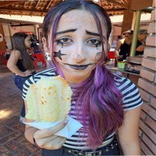

LABORATÓRIO DE PROCESSOS CRIATIVOS
Feito por: Alice, Andre, Ana Haellyn, Evelly, Gabriel e Joaquim do 2º MT
Inclusão e Acessibilidade
No dia 10/05 apresentamos um seminário sobre Inclusão e Acessibilidade, onde discutimos as diferenças entre os dois termos e analisamos 5 aplicativos que tinham o proposito de auxiliar o dia a dia de pessoas com deficiência, apontando seus pontos negativos e positivos.
O trabalho permitiu discuções importantes entre os alunos e professor em sala de aula, possibilitando reflexão e dando espaço para cada um relacionar o tema da apresentação com sua realidade.
"É comum que termos usados para descrever experiencias de minorias na sociedade
sejam confundidos e usados de forma errada. Isso é visto muitas vezes com a inclusão e a
acessibilidade.
Acessibilidade: Com a acessibilidade são trabalhadas transformações de um ambiente
físico e digital para pessoas com deficiências poderem ter autonomia e liberdade.
Inclusão: Já a inclusão trata de um conjunto de ações que combatem a exclusão na
sociedade por causa de diferenças. Ela não advoga somente pela acessibilidade mas também
garante que classe social, idade, educação gênero e raça não sejam barreiras para oportunidades
que são direito de todos.[...]"
.jpg)
Estatuto da Pessoa Idosa
No dia 09/05 apresentamos um seminário sobre o Estatuto do Idoso, onde discutimos a importancia de conhecer essa parte da população e respeitar seus direitos. Na apresentação explicamos oque é idadismo, falamos sobre a exclusão digital das pessoas da terceira idade e discutimos alguns dos principais direitos que vem com o estatuto.
O trabalho permitiu discuções importantes entre os alunos e professor em sala de aula, possibilitando reflexão e dando espaço para cada um relacionar o tema da apresentação com sua realidade.
"SUA IMPORTÂNCIA: A LEI FOI CRIADA PARA EVITAR PROBLEMAS COMO ABANDONO FAMILIAR, NEGLIGÊNCIA, DISCRIMINAÇÃO E QUALQUER TIPO DE VIOLÊNCIA CONTRA PESSOAS DE IDADE IGUAL OU SUPERIOR A 60 ANOS, TENDO TRAZIDO À TONA O LEMBRETE DE QUE TODOS ESTÃO SUJEITOS A ENVELHECER."
Portfólio
Membros da equipe:
André Henrique RodriguesWeb Designer e Progamador
Auxilio na progamação e responsável pela escolha das imagens e layout do site.

Gabriel Lucas Sacheto DiasWeb Designer
Deu sugestões para o site e ajudou na montagem dos slides.

Alice CaladoDesigner dos Slides
Responsável por montar os slides
Ana HaellynAjudante
Deu algumas sugestões para os slides e o website
Evelly GabriellyPesquisadora
Ajudou na pesquisas dos slides e do site.
Joaquim Fernando CamposPesquisador
Ajudou na pesquisas do slides dos slides e do site.
Contatos
Barretos, São Paulo, Brasil
Telefone: +55 17 99229-5105
Email: acessibildadebarretos@gmail.com